Paris reminds me of the times that I would have my parents visiting my apartment after I moved out. Quick! Do laundry! Actually fold and put away the clothes! Oh crap, I should probably scrub down the toilet and shower! Oh god, can I actually get that oatmeal off of that dish in the sink or should I just chuck it? Should I hide this handle of Cuervo?
The City of Lights
With newly extended subway lines that blare “mind the gap” in French, English, German, and Spanish, museums undergoing renovations, art directors pulling together the finest collections of masterpieces to showcase Impressionism (there were probably at least three museums that we visited that made sure to let us know that Impressionism began in France specifically in the year 1874), stadiums being erected, and the Eiffel Tower getting a new paint job, Paris was definitely a bustling city that had the feeling of preparing itself to put its best foot forward for the expected 15 million visitors that will descend upon Paris for the Summer Olympics. After our separate travels, me in Spain, Kevin in Vienna, we met up in Paris to spend a few days relaxing and doing more city activities. Much like our experience in Santiago, being in a city, especially one as cosmopolitan as Paris, makes everything easier. It was easy to get errands done (I now have a 60 day supply of some of my favorite tea), easy to get food and groceries, easy to get around (bless public transportation), and generally easy to communicate. I think that once we return to a life where we actually live in one place, I’m definitely going to appreciate the ease of being able to do simple things like laundry without having to think too hard about “where is laundry?” “can I pay for laundry with card?” “do I need to bring my own detergent?” “do I need to babysit while the washer and dryer run?” every single time. Well, I’ll appreciate it for a little while until I get accustomed to it, which I’m sure will happen expediently. It’s amazing how quickly we get used to new cadences of life.
>
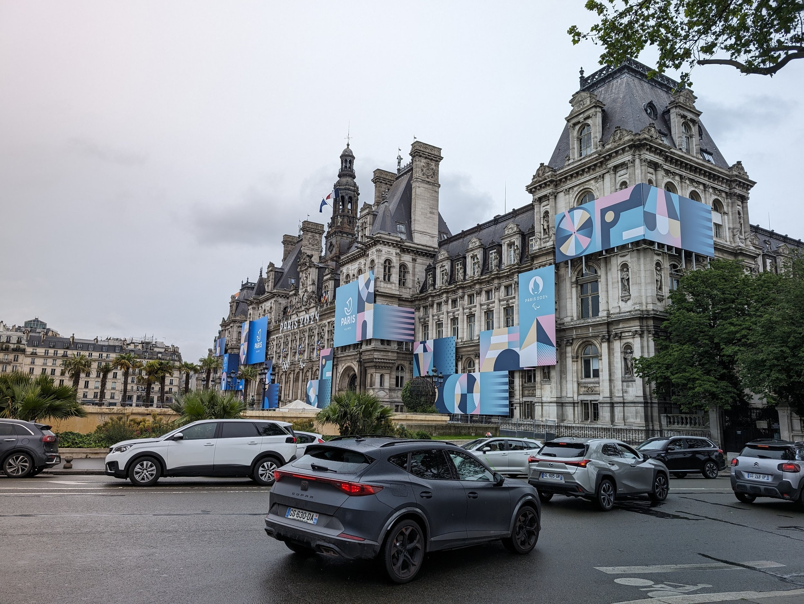
Initially, we booked an Airbnb for three nights in Paris but we ended up extending our time in Paris to a full week. We quickly got into a nice routine; each day we’d visit one or two museums, one park or open area where we could stroll around, and find one or two new bakeries to try their croissants. We walked around to most places which allowed us to stumble on lots of random things like an amazing free concert that was going on at the Westfield mall where a full orchestra was accompanying a young rapper who I found to be quite impressive. The audience was absolutely nuts for this and the musicians ended up doing three (maybe four? I lost count.) encores.
An amateur musicians concert at Westfield!
Since we had both previously visited Paris, although for both of us it was more than a decade ago, we tried to visit places that we hadn’t gone before and some smaller museums. We really enjoyed visiting Fondation Louis Vuitton that opened in 2014, for example, which had just three focused exhibits showcasing Matisse’s art and some modern art in a striking building surrounded by lush greenery that was bordering overgrown. It was possible to actually enjoy the full contents of the museum in a couple hours and feel like we did the collections some justice.
>
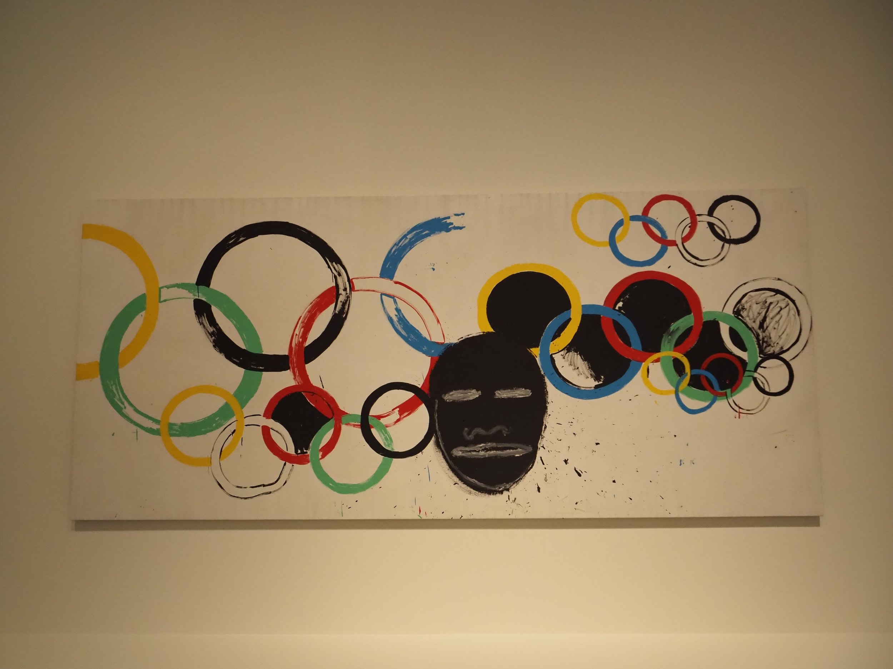
>
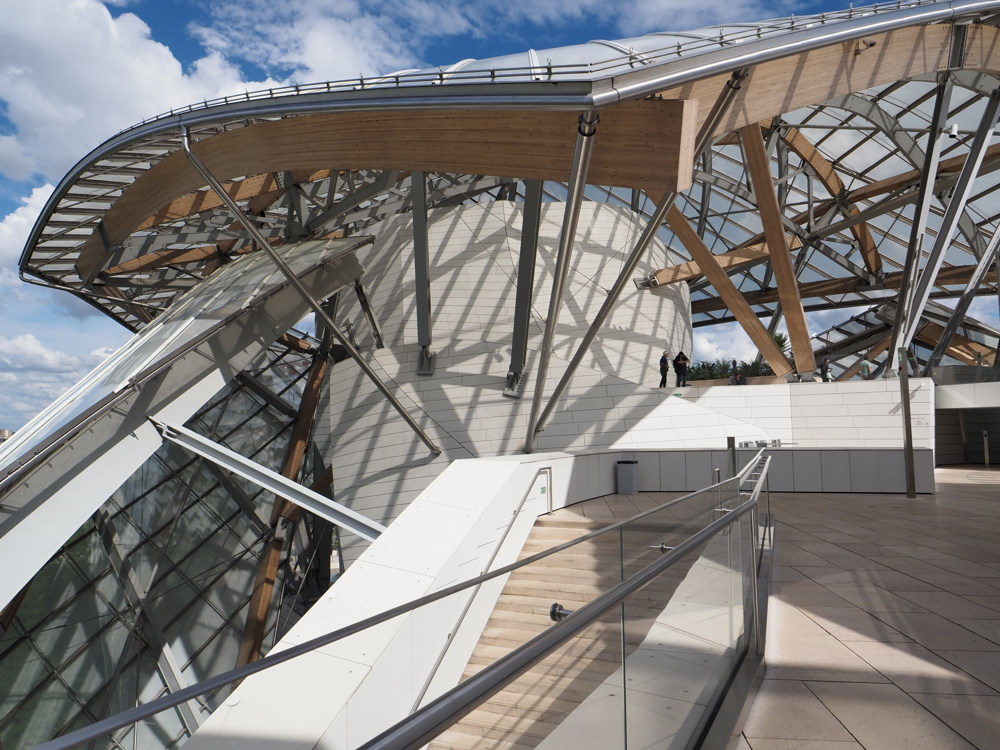
Musée D’Orangerie was another delightful museum. Like many others, I really love Impressionist art and the oval meditation rooms with Monet’s lilies along the entire circumference of the walls were so beautiful. It’s hard to believe that these rooms were so unpopular when they were first created, and that Impressionist art in general was scoffed at and rejected from the Salon.
>
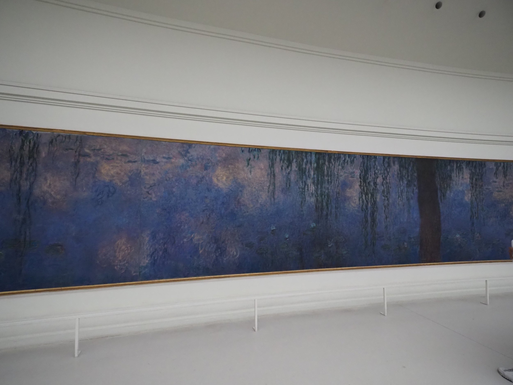
>
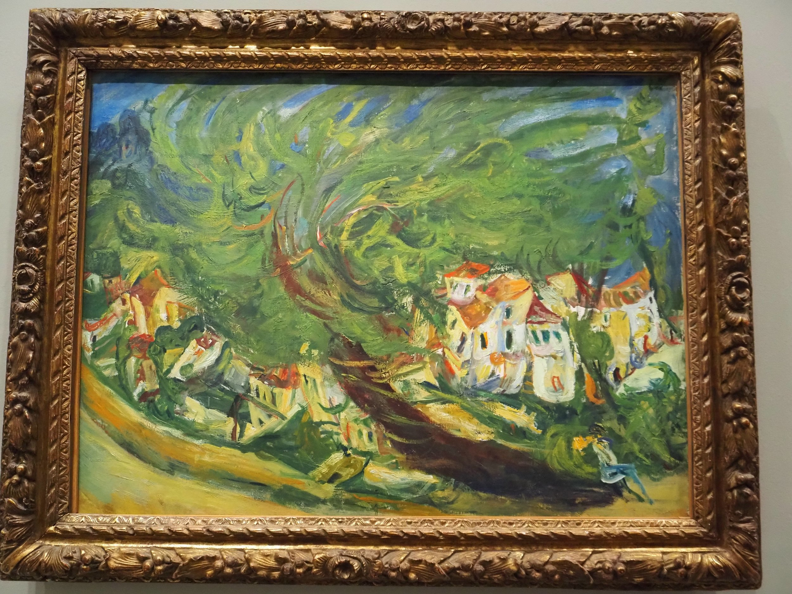
>
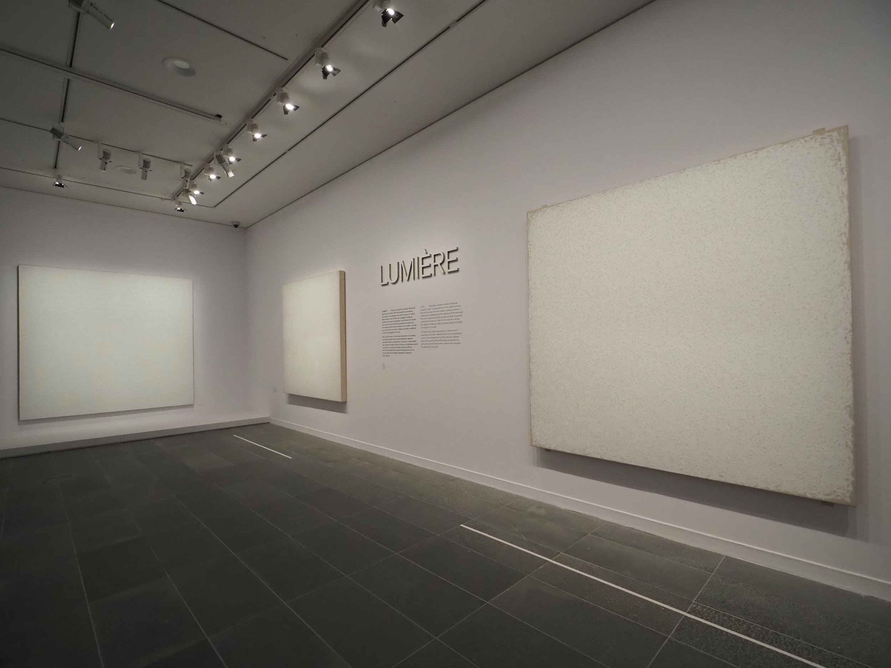
Both the exhibits on Matisse and Monet, as well as the special 150th anniversary of Impressionism exhibit made me start to wonder at my own choice in what I considered to be great art and what even makes art great. At one point, I was in front of Matisse’s supposed masterpiece The Red Studio, watching not the piece itself but the small crowd of visitors taking pictures of the canvas while a tour guide explained to another small group the background of the piece. I was struck by three accompanying letters that were displayed in a corner next to the artwork. One letter was written by Matisse who described his rationale for painting the entirety of the studio red when originally it had been painted in a more realistic/traditional style. The rationale was, in essence, “I dunno, I felt like it.” A second letter was from a Russian collector who had originally commissioned the painting and had rejected it saying that he didn’t like it. A third letter was from some time later between two art directors of the NYC MoMA who declares “let’s buy it for heaven’s sake” and that among the 8-10 works of Matisse that he had collected or sold over the years, The Red Studio was exceptional.
>
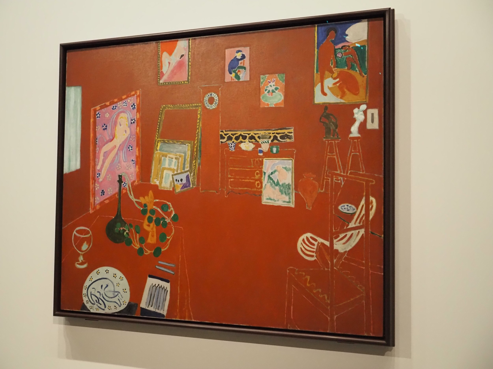
I read those three letters and felt awfully like the Russian collector who said “nah” gazing at work. This experience led me down a rabbit hole of thinking about my own tastes in art and why were some masterpieces even called masterpieces and was there something wrong with my taste in art and what does good even mean. I reached out to a friend of mine who pointed me towards this article from 1971: “Why Have There Been No Great Women Artists?” It’s a provocative title for sure, but I cannot stress enough how eye opening this article was and it certainly puts into perspective the iceberg of considerations beyond brushstrokes on canvas that make certain art so famous and not others. The article has made me want to develop a better eye and understanding for art and learn how to better appreciate good art. And maybe learn some new definitions for what “good” art means. I would encourage you to take the time to read it if you can.
>
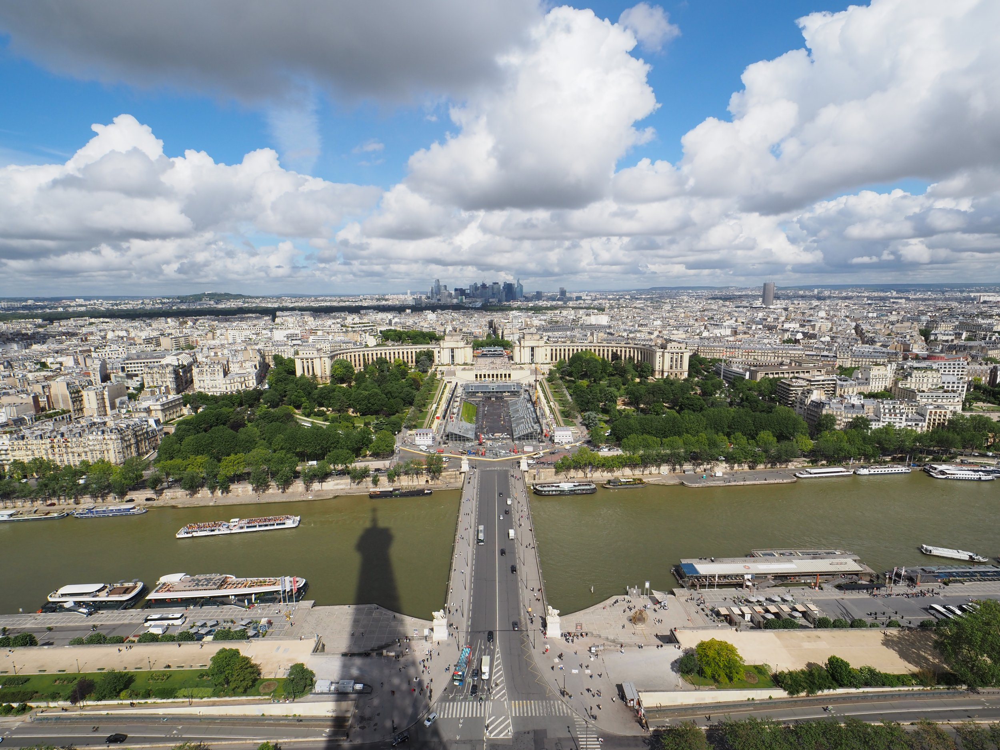
Some other highlights of the visit included visiting the Grand Mosquée de Paris, the Panthéon (a mausoleum and monument with the tombs of luminaries like Marie and Pierre Curie, Voltaire, Braille, and Langevin to name a few), Church of Saint-Étienne-du-Mont, and seeing the great progress of reconstruction of Notre Dame. I’ll add some pictures below.
>
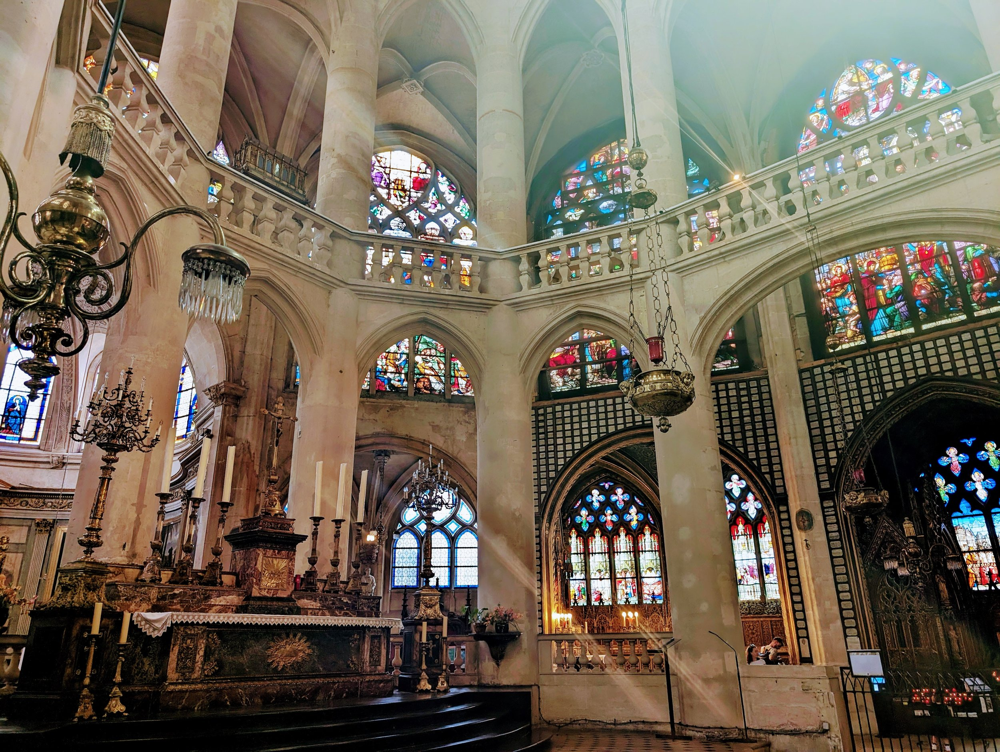
>
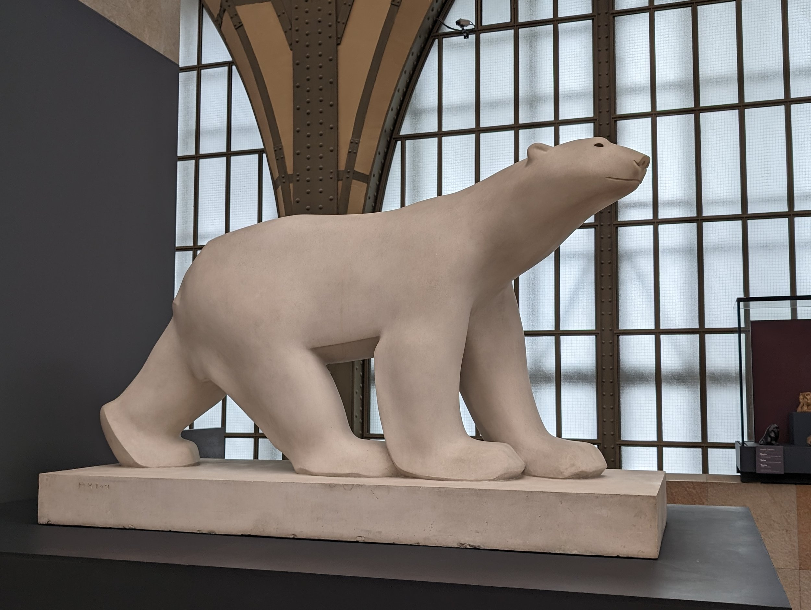
>
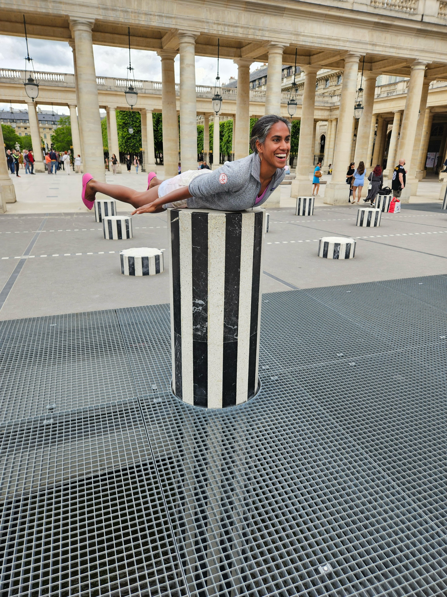
Lovely organ music at a random church we walked into. I can’t remember the name.
During my first couple of days in Paris, I struggled so much with transitioning from Spanish to French. I was really amused at myself (and Kevin really got a kick out of it too) by the number of times I said “si” instead of “oui” (I started aiming for “ouais” (“yeah”) afterwards because at least the sound is different) and the number of conversations where I prematurely patted myself on the back for not saying a Spanish word only to end the conversation too gleefully with “gracias.” I’m happy that that’s fully resolved now (and I’m sure as a consequence, my Spanish is quickly on the decline) but that was an interesting experience I haven’t had before. I also learned that I really need to improve my eavesdropping face after seeing my reflection in the window of the metro as I tried to listen to as much of the spoken French around me. I look rather like I’m passing a kidney stone. Not that I’ve had to pass a kidney stone, but you know, metaphorically. Something to improve on for the future. For now, we’re finally off to the first country where neither of us will be able to speak a lick of the language: Albania!
>
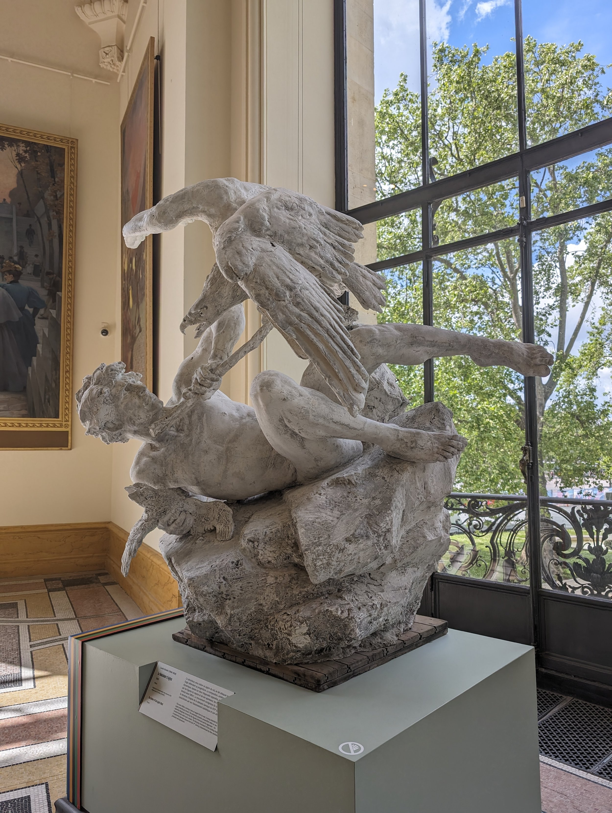
Our favorite places to visit (skipping the most famous places):
-
Petit Palais: smaller than the Grand Palais (which was closed for renovation while we were there), we found the Petit Palais to be a really fun visit that was in the process of adapting their exhibits to showcase art “in motion” for the Summer Olympics. We really enjoyed the theme and the cool photographs they had taken of Paraolympians and Olympians within its walls recently.
-
Panthéon: the mausoleum was actually quite cool to visit with some beautiful art as well.
-
Fondation Louis Vuitton: we really enjoyed the art and the surrounding park is also really beautiful to explore as well. The building itself is also very cool; there are three levels of terraces you can enjoy and get views of the city.
-
Grand Mosquée de Paris: really beautiful architecture in the Latin Quarter. There are some beautiful gardens nearby as well that you can stroll through.
Our favorite places to eat:
-
the friendly kitchen: a vegan restaurant where we were lucky to get a seat since we showed up without a reservation. The food was incredibly delicious, fresh, and creative.
-
La Cantine Gourmande: we strolled into this place for lunch which was near our Airbnb. The menu is always changing but their vegetarian lasagne was out-of-this-world good.
-
DÉLIT.: a lunch gem off of the Champs-Élysées, we had their brioche sandwiches and not only were they some of the best sandwiches ever, their chocolate chip cookie tasted homemade and was slightly ooey-gooey on the inside which is how chocolate chip cookies should be. Easily the best lunch we had.
-
la Goberie: technically I didn’t have anything to eat here, but this was an unassuming little place with excellent selections of wines where I enjoyed two glasses while sitting close to the patio (too much smoke to be actually on the patio) with my Kindle.
-
For croissants, I wrote a whole research paper separately here. I take my croissant research very seriously. But if you don’t want to read it, I would recommend The French Bastards (many locations) or Notre Pâtisserie.
-
Mariage Frères: buy tea here. I would recommend the signature Marco Polo but they have an extensive selection. This company is what made me like a fruity black tea. I don’t drink any fruity black tea except theirs. I have 2 months worth of joy in my backpack now :)
Why aren’t all bibliotheques this fun?